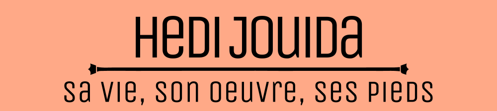

Ce site date d'il y a longtemps. Il est donc très moche et un peu cringe.
Une version améliorée du site arrivera après la prépa.
Et non, ce n'est pas Eddy Jouadi ou Heidi Jouda, ça s'écrit Hedi Jouida. Voici mon site: il sert pas à grand chose, mais ça m'occupe et puis c'est quand même stylé d'avoir un site. Je vous laisse l'explorer, lire ma biographie, télécharger mes projets ou encore trouver les easter-eggs. C'est un petit site troll, alors ne prenez pas tout au sérieux. Bonne visite !